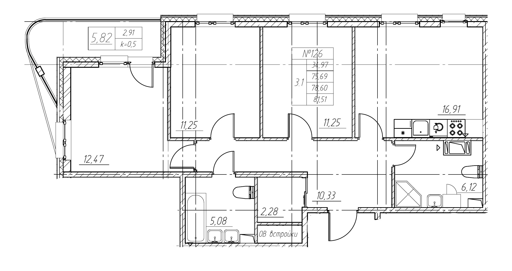
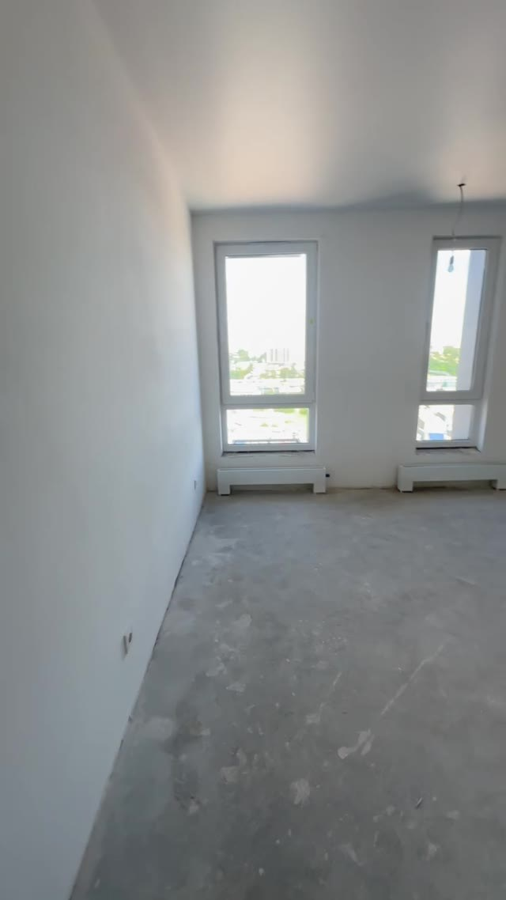
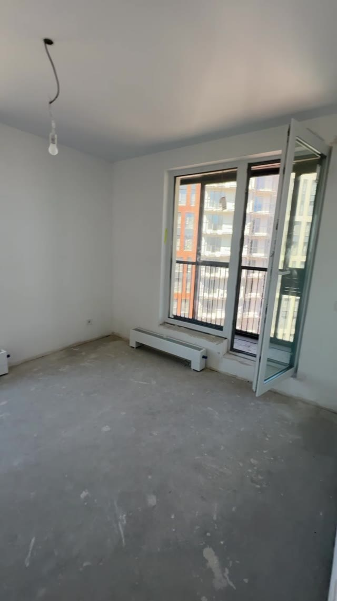

ВТОРАЯ ИТЕРАЦИЯ / СЕНТЯБРЬ 2026
Больше места
для жизни вместе.
Два сценария: большая кухня-гостиная
или мастер-спальня с собственной гардеробной.
ОДНА КВАРТИРА / ДВА СЦЕНАРИЯ
Что меняется
Общее пространство или приватный блок — сравните, что ближе вам.
Большая кухня-гостиная
28,16 м² вместо 16,91. Две другие комнаты сохраняются. Старый проём за телевизором закрыт.
Мастер-спальня
Спальня и гардеробная — 23,72 м². Приватный тамбур ведёт в ванную. Исходная кухня и отдельная гостиная сохраняются.
Тёплая лоджия
В обоих предложениях убрано оконно-дверное заполнение к лоджии. Простенки сохранены до проверки конструкций. Остекление и контур уточнены по источникам.
ОТ ЧЕРТЕЖА К ПРОСТРАНСТВУ
На чём основан эскиз



Точность модели и что ещё нужно уточнить +
В PDF три близких плана: №198, №126 и №54. Номер вашей квартиры ещё не подтверждён. За временную основу взята схема №126: 75,69 м² без лоджии и 78,60 м² с коэффициентом лоджии. Лоджия фактически 5,82 м².
Площади в интерфейсе прочитаны с чертежа. Линейные размеры, толщина стен, оконные проёмы и мебель восстановлены приблизительно; высота 2,75 м принята для визуализации. Просмотрены 18 кадров видео длительностью 2:20; аудио не транскрибировано.
Объединение — гипотеза для обсуждения. До ремонта нужно подтвердить конструкцию перегородки, инженерные ограничения, тип плиты и допустимость перепланировки. Мокрые зоны сохранены. В предложениях лоджия показана тёплой: оконно-дверное заполнение демонтировано, простенки оставлены. В легенде PDF несущие стены не обозначены; их статус и возможность дальнейшего демонтажа требуют конструктивного плана. В мастер-варианте объединение функциональное: сохранённая стена между комнатами обходится через приватный тамбур. Это не строительный проект.